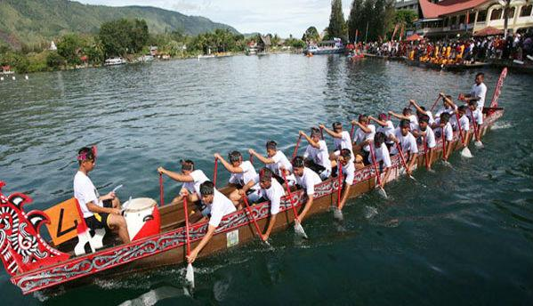

Seni & Pertunjukan
Indonesia
1. Sendratari Ramayana Prambanan — Yogyakarta

Bayangkan menyaksikan kisah Ramayana melalui gerakan tari dan alunan gamelan dengan Candi Prambanan sebagai latar belakang. Itulah pengalaman yang ditawarkan Sendratari Ramayana.
Pertunjukan ini menggabungkan seni tari Jawa dan musik gamelan dalam sebuah pertunjukan tanpa dialog. Tata cahaya dan latar candi membuat pertunjukan terasa semakin dramatis dan memberikan pengalaman budaya yang kuat bagi pengunjung.
2. Tari Hudoq & Tari Dayak Kenyah - Kalimantan Timur

Menampilkan visual yang magis dan sarat makna, Tari Hudoq dan Tari Dayak Kenyah merupakan wujud nyata kedalaman filosofi hidup suku Dayak di pedalaman Kalimantan. Tari Hudoq identik dengan penggunaan topeng kayu raksasa yang melambangkan roh pelindung tanaman, sementara Dayak Kenyah menghadirkan keanggunan gerakan lembut serta ketangkasan tari perang.
Pertunjukan ini menggabungkan seni gerak, busana adat dari serat alam yang khas, dan alunan petikan alat musik sape tanpa dialog. Tata gerak yang ritmis dan nilai sakral di dalamnya membuat pertunjukan ini memberikan pengalaman budaya yang mendalam, memperlihatkan bagaimana masyarakat Dayak menghormati alam, leluhur, dan kebersamaan komunitas mereka.
3. Festival Danau Toba - Sumatera Utara

Festival Danau Toba adalah perayaan budaya besar yang menampilkan keindahan tradisi masyarakat Batak di sekitar danau vulkanik terbesar di dunia. Selama festival, pengunjung dapat menyaksikan ritual adat, pertunjukan musik etnik Gondang Sabangunan, dan gerakan ritmis Tari Tor‑Tor.
Festival Danau Toba menjadi panggung penting untuk melestarikan warisan leluhur dan memperkenalkannya kepada dunia dalam suasana meriah. Gabungan teater rakyat, kompetisi olahraga air tradisional, dan pemandangan alam Toba yang indah memberi pengalaman budaya yang kuat bagi wisatawan.